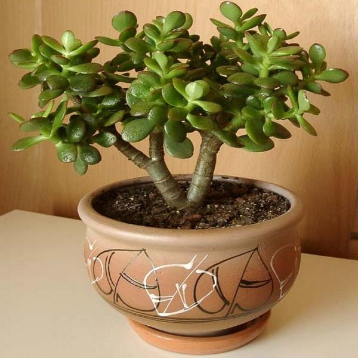

Уход и проблемы выращивания
Уход за толстянкой в домашних условиях заключается в следующем:

- интенсивное освещение – залог активного роста, здоровья и красоты вашего питомца.
Место для горшка необходимо выбрать на просторном подоконнике южного, юго-восточного
или юго-западного направлений или вблизи них;
- денежное дерево хорошо себя чувствует при обычной комнатной температуре в пределах +22–28°С.
В летний период его можно вынести на балкон, веранду, в сад;
- толстянка сильно реагирует на наличие в почве лишней влаги.Никогда не заливайте суккуленты.
Их корневая система склонна к загниванию, сразу же начнут опадать листья, пышная крона превратится с лысый стволик;
- летом Денежное дерево поливают обильно один раз в 2 – 3 недели. Осенью поливайте Толстянку через 3 – 4 недели;
- в летний период поливают 2-3 раза в неделю, зимой — раз в 10 дней;
- корневая система цветка мочковатая, довольно слабая, поверхностная. Поэтому, горшок для Денежного дерева нужно выбрать
по ширине корней. Кроме того, он должен быть неглубоким и тяжелым, лучше – глиняным, чтобы подрастающее деревцо его не
опрокинуло. В таком горшке корни будут хорошо развиваться, доставляя влагу и питательные вещества к стеблям и листьям;
- денежное дерево нуждается в подкормке лишь во время активного роста стеблей и листьев — с конца весны и до середины августа.
Достаточно трех прикормок за это время;